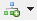
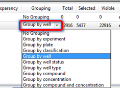

The chart legend appears by default below the chart. It is possible to change the location or hide the legend. You can control the location using this button: 
The appearance of the legend may change according to chart or selected options.

Each layer within the legend shows information about that layer and has some customization functions of its own.
- Add a layer: 
- Remove a layer:
| Function | Meaning |
|---|---|
| Layer name | Show the layer's name, with a check box to hide the layer. |
| Size | The size of the points in this layer. |
| Transparency | How much transparency is in this layer. 1 means the layer is hidden and 0.0 means the layer is fully visible. Note that not all layers support transparency. |
| Grouping | Group this layer's data with a common color and symbol. Click on the item to see a list of grouping options.  |
| Adjust settings |
See and modify the layer's preferences. |
| Axes | Select the well or subwell features to plot on the X, Y or Z axis. There is also an option to enter a custom calculation formula. |
| Aggregation method | Select an aggregation method if you want to plot aggregated values instead of all values. For more information, see Aggregation method. |
| Add auxiliary axis | Use the axis color to represent an additional feature or property, effectively creating an auxiliary axis. For more information, see Auxiliary Axes. |
| Filter |
Filter data in this layer, for example by excluding rejected wells. |
| Reset layer | Reset the layer to its default values. |
Note: You can rearrange chart layers by dragging them above or below other layers. This will influence the order in which the layers are plotted.